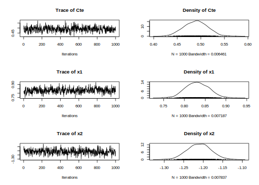
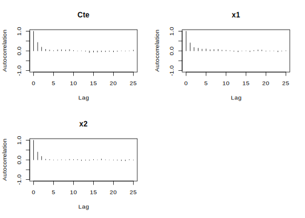

6.2 The logit model
In the logit model, the dependent variable is binary, \(y_i=\left\{1,0\right\}\), which follows a Bernoulli distribution, \(y_i \stackrel{ind}{\sim} B(\pi_i)\), such that \(p(y_i=1)=\pi_i\), where \(\pi_i = \frac{\exp\left\{{\mathbf{x}}_i^{\top}\boldsymbol{\beta}\right\}}{1 + \exp\left\{{\mathbf{x}}_i^{\top}\boldsymbol{\beta}\right\}}\), and \(\mathbf{x}_i\) is a \(K\)-dimensional vector of regressors.
The likelihood function of the logit model is:
\[ p({\mathbf{y}} \mid \boldsymbol{\beta}, {\mathbf{X}}) = \prod_{i=1}^N \pi_i^{y_i}(1 - \pi_i)^{1 - y_i} \] \[ = \prod_{i=1}^N \left( \frac{\exp\left\{{\mathbf{x}}_i^{\top}\boldsymbol{\beta}\right\}}{1 + \exp\left\{{\mathbf{x}}_i^{\top}\boldsymbol{\beta}\right\}} \right)^{y_i} \left( \frac{1}{1 + \exp\left\{{\mathbf{x}}_i^{\top}\boldsymbol{\beta}\right\}} \right)^{1 - y_i}. \]
We can specify a Normal distribution as a prior, \(\boldsymbol{\beta} \sim N({\boldsymbol{\beta}}_0, {\mathbf{B}}_0)\). Then, the posterior distribution is:
\[ \pi(\boldsymbol{\beta} \mid {\mathbf{y}}, {\mathbf{X}}) \propto \prod_{i=1}^N \left( \frac{\exp\left\{{\mathbf{x}}_i^{\top}\boldsymbol{\beta}\right\}}{1 + \exp\left\{{\mathbf{x}}_i^{\top}\boldsymbol{\beta}\right\}} \right)^{y_i} \left( \frac{1}{1 + \exp\left\{{\mathbf{x}}_i^{\top}\boldsymbol{\beta}\right\}} \right)^{1 - y_i} \] \[ \times \exp\left\{-\frac{1}{2}(\boldsymbol{\beta} - \boldsymbol{\beta}_0)^{\top} {\mathbf{B}}_0^{-1} (\boldsymbol{\beta} - \boldsymbol{\beta}_0)\right\}. \]
The logit model does not have a standard posterior distribution. Therefore, a random walk Metropolis–Hastings algorithm can be used to obtain draws from the posterior distribution. A potential proposal distribution is a multivariate normal, centered at the current value, with covariance matrix \(\tau^2({\mathbf{B}}_0^{-1} + \widehat{{\mathbf{\Sigma}}}^{-1})^{-1}\), where \(\tau > 0\) is a tuning parameter and \(\widehat{\mathbf{\Sigma}}\) is the sample covariance matrix obtained from the maximum likelihood estimation (A. D. Martin, Quinn, and Park 2011).
Tuning parameters should be set in a way that ensures reasonable diagnostic criteria and acceptance rates.
Observe that: \[ \log(p({\mathbf{y}} \mid \boldsymbol{\beta}, {\mathbf{X}})) = \sum_{i=1}^N y_i {\mathbf{x}}_i^{\top} \boldsymbol{\beta} - \log(1 + \exp({\mathbf{x}}_i^{\top} \boldsymbol{\beta})). \]
This expression can be used when calculating the acceptance parameter in the computational implementation of the Metropolis-Hastings algorithm. In particular, the acceptance parameter is:
\[ \alpha = \min\left\{1, \exp\left(\log(p({\mathbf{y}} \mid \boldsymbol{\beta}^{c}, {\mathbf{X}})) + \log(\pi(\boldsymbol{\beta}^c)) - \left(\log(p({\mathbf{y}} \mid \boldsymbol{\beta}^{(s-1)}, {\mathbf{X}})) + \log(\pi(\boldsymbol{\beta}^{(s-1)}))\right)\right)\right\}, \] where \(\boldsymbol{\beta}^c\) and \(\boldsymbol{\beta}^{(s-1)}\) are the draws from the proposal distribution and the previous iteration of the Markov chain, respectively.
Formulating the acceptance rate using \(\log\) helps mitigate computational problems.
Example: Simulation exercise
Let’s do a simulation exercise to check the performance of the algorithm. Set \(\boldsymbol{\beta} = \begin{bmatrix}0.5 & 0.8 & -1.2\end{bmatrix}^{\top}\), \(x_{ik} \sim N(0,1)\), \(k=2,3\) and \(i=1,2,\dots,10000\).
We set as hyperparameters \(\boldsymbol{\beta}_0 = [0 \ 0 \ 0]^{\top}\) and \({\mathbf{B}}_0 = 1000 {\mathbf{I}}_3\). The tuning parameter for the Metropolis-Hastings algorithm is equal to 1.
Once our GUI is displayed (see beginning of this chapter), we should follow the next Algorithm to run logit models in our GUI (see Chapter 5 for details):
Algorithm: Logit model
Select Univariate Models on the top panel
Select Logit model using the left radio button
Upload the dataset by first selecting whether there is a header in the file, and the kind of separator in the csv file of the dataset (comma, semicolon, or tab). Then, use the Browse button under the Choose File legend. You should see a preview of the dataset
Select MCMC iterations, burn-in, and thinning parameters using the Range sliders
Select dependent and independent variables using the Formula builder table
Click the Build formula button to generate the formula in R syntax. You can modify the formula in the Main equation box using valid arguments of the formula command structure in R
Set the hyperparameters: mean vector and covariance matrix. This step is not necessary as by default our GUI uses non-informative priors
Select the tuning parameter for the Metropolis-Hastings algorithm. This step is not necessary as by default our GUI sets the tuning parameter at 1.1
Click the Go! button
Analyze results
Download posterior chains and diagnostic plots using the Download Posterior Chains and Download Posterior Graphs buttons
We can see in the following R code how to perform the logit model using the MCMClogit command from the MCMCpack package, as well as by programming the Metropolis-Hastings algorithm ourselves.
We should obtain similar results using the three approaches: GUI, package, and our function. Our GUI relies on the MCMClogit command. In particular, we achieve an acceptance rate of 0.46, and the diagnostics suggest that the posterior chains behave well. In general, the 95% credible intervals encompass the population values, and both the mean and median are very close to these values.
########################## Logit: Simulation ##########################
# Simulate data
rm(list = ls())
set.seed(010101)
N <- 10000 # Sample size
B <- c(0.5, 0.8, -1.2) # Population location parameters
x2 <- rnorm(N) # Regressor
x3 <- rnorm(N) # Regressor
X <- cbind(1, x2, x3) # Regressors
XB <- X%*%B
PY <- exp(XB)/(1 + exp(XB)) # Probability of Y = 1
Y <- rbinom(N, 1, PY) # Draw Y's
table(Y) # Frequency## Y
## 0 1
## 4115 5885# write.csv(cbind(Y, x2, x3), file = "DataSimulations/LogitSim.csv") # Export data
# MCMC parameters
iter <- 5000; burnin <- 1000; thin <- 5; tune <- 1
# Hyperparameters
K <- dim(X)[2]
b0 <- rep(0, K)
c0 <- 1000
B0 <- c0*diag(K)
B0i <- solve(B0)
# Posterior distributions using packages: MCMCpack sets the model in terms of the precision matrix
RegLog <- MCMCpack::MCMClogit(Y~X-1, mcmc = iter, burnin = burnin, thin = thin, b0 = b0, B0 = B0i, tune = tune)
summary(RegLog)##
## Iterations = 1001:5996
## Thinning interval = 5
## Number of chains = 1
## Sample size per chain = 1000
##
## 1. Empirical mean and standard deviation for each variable,
## plus standard error of the mean:
##
## Mean SD Naive SE Time-series SE
## X 0.4896 0.02550 0.0008064 0.001246
## Xx2 0.8330 0.02730 0.0008632 0.001406
## Xx3 -1.2104 0.03049 0.0009643 0.001536
##
## 2. Quantiles for each variable:
##
## 2.5% 25% 50% 75% 97.5%
## X 0.4424 0.4728 0.4894 0.5072 0.5405
## Xx2 0.7787 0.8159 0.8327 0.8505 0.8852
## Xx3 -1.2758 -1.2296 -1.2088 -1.1902 -1.1513# Posterior distributions programming the Metropolis-Hastings algorithm
MHfunc <- function(y, X, b0 = rep(0, dim(X)[2] + 1), B0 = 1000*diag(dim(X)[2] + 1), tau = 1, iter = 6000, burnin = 1000, thin = 5){
Xm <- cbind(1, X) # Regressors
K <- dim(Xm)[2] # Number of location parameters
BETAS <- matrix(0, iter + burnin, K) # Space for posterior chains
Reg <- glm(y ~ Xm - 1, family = binomial(link = "logit")) # Maximum likelihood estimation
BETA <- Reg$coefficients # Maximum likelihood parameter estimates
tot <- iter + burnin # Total iterations M-H algorithm
COV <- vcov(Reg) # Maximum likelihood covariance matrix
COVt <- tau^2*solve(solve(B0) + solve(COV)) # Covariance matrix for the proposal distribution
Accep <- rep(0, tot) # Space for calculating the acceptance rate
# Create progress bar in case that you want to see iterations progress
pb <- txtProgressBar(min = 1, max = tot, style = 3)
for(it in 1:tot){
BETAc <- BETA + MASS::mvrnorm(n = 1, mu = rep(0, K), Sigma = COVt) # Candidate location parameter
likecand <- sum((Xm%*%BETAc) * Y - apply(Xm%*%BETAc, 1, function(x) log(1 + exp(x)))) # Log likelihood for the candidate
likepast <- sum((Xm%*%BETA) * Y - apply((Xm%*%BETA), 1, function(x) log(1 + exp(x)))) # Log likelihood for the actual draw
priorcand <- (-1/2)*crossprod((BETAc - b0), solve(B0))%*%(BETAc - b0) # Log prior for candidate
priorpast <- (-1/2)*crossprod((BETA - b0), solve(B0))%*%(BETA - b0) # Log prior for actual draw
alpha <- min(1, exp((likecand + priorcand) - (likepast + priorpast))) #Probability of selecting candidate
u <- runif(1) # Decision rule for selecting candidate
if(u < alpha){
BETA <- BETAc # Changing reference for candidate if selected
Accep[it] <- 1 # Indicator if the candidate is accepted
}
BETAS[it, ] <- BETA # Saving draws
setTxtProgressBar(pb, it)
}
close(pb)
keep <- seq(burnin, tot, thin)
return(list(Bs = BETAS[keep[-1], ], AceptRate = mean(Accep[keep[-1]])))
}
Posterior <- MHfunc(y = Y, X = cbind(x2, x3), iter = iter, burnin = burnin, thin = thin) # Running our M-H function changing some default parameters.## | | | 0% | | | 1% | |= | 1% | |= | 2% | |== | 2% | |== | 3% | |== | 4% | |=== | 4% | |=== | 5% | |==== | 5% | |==== | 6% | |===== | 6% | |===== | 7% | |===== | 8% | |====== | 8% | |====== | 9% | |======= | 9% | |======= | 10% | |======= | 11% | |======== | 11% | |======== | 12% | |========= | 12% | |========= | 13% | |========= | 14% | |========== | 14% | |========== | 15% | |=========== | 15% | |=========== | 16% | |============ | 16% | |============ | 17% | |============ | 18% | |============= | 18% | |============= | 19% | |============== | 19% | |============== | 20% | |============== | 21% | |=============== | 21% | |=============== | 22% | |================ | 22% | |================ | 23% | |================ | 24% | |================= | 24% | |================= | 25% | |================== | 25% | |================== | 26% | |=================== | 26% | |=================== | 27% | |=================== | 28% | |==================== | 28% | |==================== | 29% | |===================== | 29% | |===================== | 30% | |===================== | 31% | |====================== | 31% | |====================== | 32% | |======================= | 32% | |======================= | 33% | |======================= | 34% | |======================== | 34% | |======================== | 35% | |========================= | 35% | |========================= | 36% | |========================== | 36% | |========================== | 37% | |========================== | 38% | |=========================== | 38% | |=========================== | 39% | |============================ | 39% | |============================ | 40% | |============================ | 41% | |============================= | 41% | |============================= | 42% | |============================== | 42% | |============================== | 43% | |============================== | 44% | |=============================== | 44% | |=============================== | 45% | |================================ | 45% | |================================ | 46% | |================================= | 46% | |================================= | 47% | |================================= | 48% | |================================== | 48% | |================================== | 49% | |=================================== | 49% | |=================================== | 50% | |=================================== | 51% | |==================================== | 51% | |==================================== | 52% | |===================================== | 52% | |===================================== | 53% | |===================================== | 54% | |====================================== | 54% | |====================================== | 55% | |======================================= | 55% | |======================================= | 56% | |======================================== | 56% | |======================================== | 57% | |======================================== | 58% | |========================================= | 58% | |========================================= | 59% | |========================================== | 59% | |========================================== | 60% | |========================================== | 61% | |=========================================== | 61% | |=========================================== | 62% | |============================================ | 62% | |============================================ | 63% | |============================================ | 64% | |============================================= | 64% | |============================================= | 65% | |============================================== | 65% | |============================================== | 66% | |=============================================== | 66% | |=============================================== | 67% | |=============================================== | 68% | |================================================ | 68% | |================================================ | 69% | |================================================= | 69% | |================================================= | 70% | |================================================= | 71% | |================================================== | 71% | |================================================== | 72% | |=================================================== | 72% | |=================================================== | 73% | |=================================================== | 74% | |==================================================== | 74% | |==================================================== | 75% | |===================================================== | 75% | |===================================================== | 76% | |====================================================== | 76% | |====================================================== | 77% | |====================================================== | 78% | |======================================================= | 78% | |======================================================= | 79% | |======================================================== | 79% | |======================================================== | 80% | |======================================================== | 81% | |========================================================= | 81% | |========================================================= | 82% | |========================================================== | 82% | |========================================================== | 83% | |========================================================== | 84% | |=========================================================== | 84% | |=========================================================== | 85% | |============================================================ | 85% | |============================================================ | 86% | |============================================================= | 86% | |============================================================= | 87% | |============================================================= | 88% | |============================================================== | 88% | |============================================================== | 89% | |=============================================================== | 89% | |=============================================================== | 90% | |=============================================================== | 91% | |================================================================ | 91% | |================================================================ | 92% | |================================================================= | 92% | |================================================================= | 93% | |================================================================= | 94% | |================================================================== | 94% | |================================================================== | 95% | |=================================================================== | 95% | |=================================================================== | 96% | |==================================================================== | 96% | |==================================================================== | 97% | |==================================================================== | 98% | |===================================================================== | 98% | |===================================================================== | 99% | |======================================================================| 99% | |======================================================================| 100%## [1] "Acceptance rate equal to 0.46"## [1] "Acceptance rate equal to 0.46"PostPar <- coda::mcmc(Posterior$Bs)
# Names
colnames(PostPar) <- c("Cte", "x1", "x2")
# Summary posterior draws
summary(PostPar)##
## Iterations = 1:1000
## Thinning interval = 1
## Number of chains = 1
## Sample size per chain = 1000
##
## 1. Empirical mean and standard deviation for each variable,
## plus standard error of the mean:
##
## Mean SD Naive SE Time-series SE
## Cte 0.4893 0.02427 0.0007674 0.001223
## x1 0.8309 0.02699 0.0008536 0.001440
## x2 -1.2107 0.02943 0.0009308 0.001423
##
## 2. Quantiles for each variable:
##
## 2.5% 25% 50% 75% 97.5%
## Cte 0.4431 0.4721 0.4899 0.5059 0.5344
## x1 0.7817 0.8123 0.8305 0.8505 0.8833
## x2 -1.2665 -1.2309 -1.2107 -1.1911 -1.1538

##
## Fraction in 1st window = 0.1
## Fraction in 2nd window = 0.5
##
## Cte x1 x2
## -0.975 -3.112 1.326##
## Quantile (q) = 0.5
## Accuracy (r) = +/- 0.05
## Probability (s) = 0.95
##
## Burn-in Total Lower bound Dependence
## (M) (N) (Nmin) factor (I)
## Cte 6 731 385 1.90
## x1 6 703 385 1.83
## x2 6 725 385 1.88##
## Stationarity start p-value
## test iteration
## Cte passed 1 0.4436
## x1 passed 101 0.3470
## x2 passed 1 0.0872
##
## Halfwidth Mean Halfwidth
## test
## Cte passed 0.489 0.00240
## x1 passed 0.832 0.00268
## x2 passed -1.211 0.00279